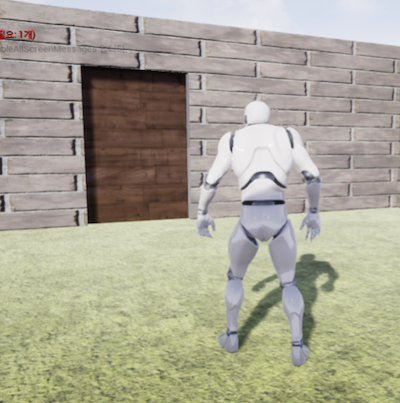
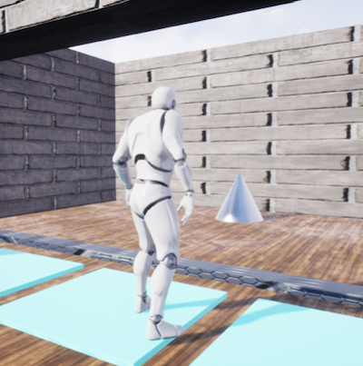

実装機能
|  |
문이 열리는 기능 문 근처로 가면 문이 열립니다. 만약 문이 잠겨 있다면 열리지 않고 열쇠가 필요하다는 문구가 뜹니다. |

|
순서대로 발판 밟기 기능 발판을 순서대로 밟아야 잠긴 문이 열립니다. |
|  |
열쇠 획득 기능 열쇠 근처로 가면 열쇠를 획득할 수 있습니다. |

|
다음 스테이지 이동 기능 현재 스테이지를 클리어하면 다음 스테이지로 이동합니다. |
背景と目的
最近、ゲーム開発時にUnityの次によく使うエンジンがUnrealです。 これほどUnrealもゲーム開発者たちに基礎素養になりました。 そのため、ゲーム開発者になることに備えて基礎素養を育てるために私だけのゲームを製作することになりました。
最近、ゲーム開発時にUnityの次によく使うエンジンがUnrealです。 これほどUnrealもゲーム開発者たちに基礎素養になりました。 そのため、ゲーム開発者になることに備えて基礎素養を育てるために私だけのゲームを製作することになりました。
学んだこと
- Unrealでブループリントでプログラムを実装する方法と、ブループリントとC++の長所と短所を学びました。
- ブループリントでイベントを実装した後に呼び出す方法を学びました。
- ブループリントでColor Objectのプロパティ値を変更する方法を学びました。
進行手順
- ’王初歩のためのUnrealエンジン4’講義を聞きながら一つずつフォローしました。
- ゲーム環境を構築した後、いくつかの機能を実装しました。 最も代表的には、4つの足場を順番に踏むとドアが開くようにしました。
- これはブループリントでイベントを実装した後に呼び出すようにしました。 そして、足場を踏むときにColor ObjectのColor値を変更して足場の色が変わるようにしました。
- しかし、私は意図したとおりに実行されませんでした。 そこで、講義でした内容を再び見ながら問題を見つけて修正したあとに、足場を順番に踏むとドアが開くようにできました。
- このようにして目的のプログラムを実装できました。
能力強化のために最も努力したこと
Unrealで衝突判定、アニメーションを利用したクリエイティブゲームを実現
Unrealで衝突判定、アニメーションを利用したクリエイティブゲームを実現
全体構造

使用技術
Unreal, Blueprints
Unreal, Blueprints
開発環境
Unreal 4.2.3
Unreal 4.2.3
追加の説明